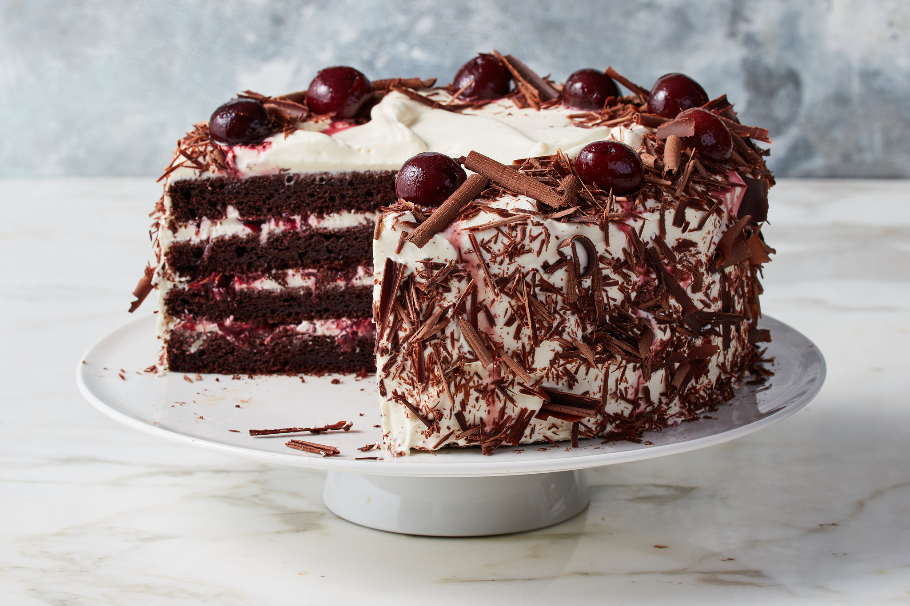

Black Forest Cake

Description
Black Forest Cake is a classic German dessert made with layers of
chocolate cake, whipped cream, and cherries. It's a decadent and indulgent
treat that is sure to impress your guests.
Ingredients
- 2 cups all-purpose flour
- 2 cups granulated sugar
- 3/4 cup unsweetened cocoa powder
- 2 teaspoons baking powder
- 1 1/2 teaspoons baking soda
- 1 teaspoon salt
- 1 cup milk
- 1/2 cup vegetable oil
- 2 large eggs
- 2 teaspoons vanilla extract
- 1 cup boiling water
- 2 cans (21 ounces each) cherry pie filling
- 3 cups heavy whipping cream
- 1/4 cup powdered sugar
- Chocolate shavings for garnish
- Maraschino cherries for garnish
Steps
-
Step 1: Preheat the oven to 350°F (175°C). Grease and flour two 9-inch
round cake pans.
-
Step 2: In a large mixing bowl, combine the flour, sugar, cocoa powder,
baking powder, baking soda, and salt.
-
Step 3: Add the milk, vegetable oil, eggs, and vanilla extract to the
dry ingredients. Beat on medium speed for 2 minutes.
-
Step 4: Stir in the boiling water. The batter will be thin, but that's
okay.
-
Step 5: Pour the batter evenly into the prepared cake pans. Bake for 30
to 35 minutes, or until a toothpick inserted into the center of the
cakes comes out clean.
-
Step 6: Remove the cakes from the oven and let them cool in the pans for
10 minutes. Then, transfer them to a wire rack to cool completely.
-
Step 7: Once the cakes are completely cooled, use a serrated knife to
level the tops if needed. Cut each cake horizontally into two layers.
-
Step 8: In a separate mixing bowl, whip the heavy cream and powdered
sugar together until stiff peaks form.
-
Step 9: Place one cake layer on a serving plate. Spread a layer of
cherry pie filling on top, followed by a layer of whipped cream. Repeat
this layering process with the remaining cake layers.
-
Step 10: Frost the sides and top of the cake with the remaining whipped
cream. Decorate with chocolate shavings and maraschino cherries.
-
Step 11: Refrigerate the cake for at least 2 hours before serving to
allow the flavors to meld together.